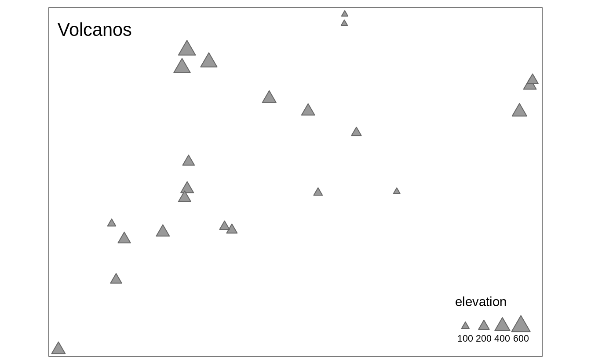
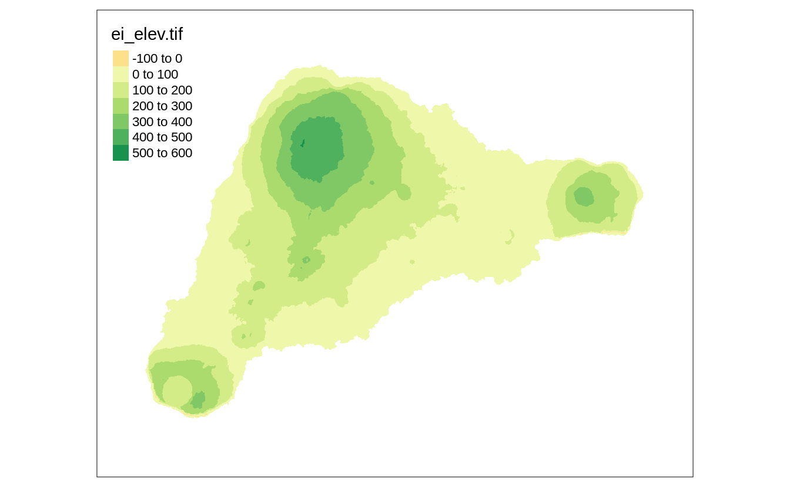
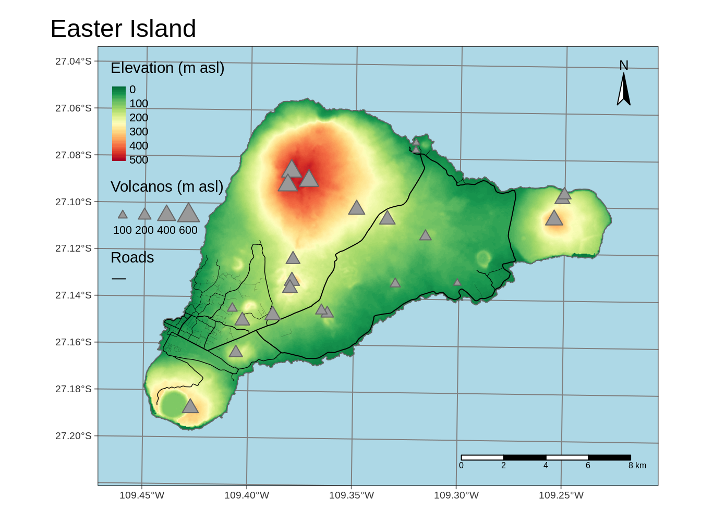

Chapter 3 tmap in a nutshell
The tmap package allows the creation of thematic maps with great flexibility. It accepts spatial data in various formats shape objects (section 3.1) Next, the data can be used to create simple, quick maps (section 3.2) and more complex and expandable maps (section 3.3). These maps can be presented in two modes - as a static map and an interactive one. Additionally, tmap makes it possible to create small multiples map (section 3.5) and map animations (section 3.6).
3.1 Shape objects
library(tmap)
library(sf)
library(stars)
ei_elev = read_stars("data/easter_island/ei_elev.tif")
ei_borders = read_sf("data/easter_island/ei_border.gpkg")
ei_roads = read_sf("data/easter_island/ei_roads.gpkg")
ei_points = read_sf("data/easter_island/ei_points.gpkg")
volcanos = subset(ei_points, type == "volcano")3.2 Quick maps


3.3 Regular maps
my_map = tm_shape(ei_elev) +
tm_graticules() +
tm_raster(style = "cont", title = "Elevation (m asl)",
palette = "-RdYlGn", midpoint = NA) +
tm_shape(ei_borders) +
tm_borders() +
tm_shape(ei_roads) +
tm_lines(lwd = "strokelwd", legend.lwd.show = FALSE) +
tm_shape(volcanos) +
tm_symbols(shape = 24, size = "elevation",
title.size = "Volcanos (m asl)") +
tm_add_legend(type = "line", title = "Roads", col = "black") +
tm_compass(position = c("right", "top")) +
tm_scale_bar() +
tm_layout(main.title = "Easter Island",
bg.color = "lightblue")